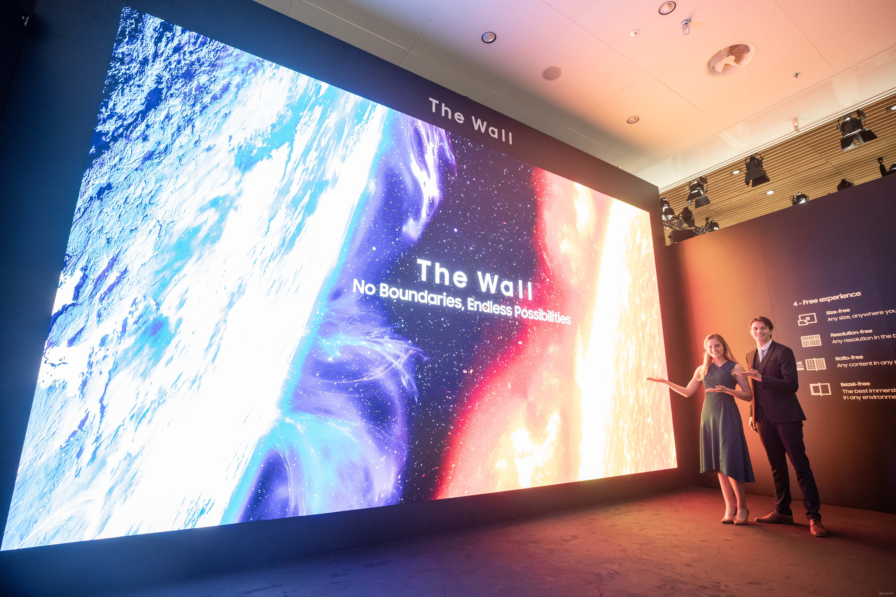

Факты о телевизорах и выбор

Первый механический телевизор (1925): Шотландец Джон Логи Бэрд создал устройство, способное передавать движущиеся изображения. Картинка была крошечной, с низким разрешением.
Рождение электроники: В 1930-х годах произошел переход к электронному телевидению. Изобретатель русского происхождения Владимир Зворыкин создал «иконоскоп» (передающую трубку) и «кинескоп». Это позволило запустить полноценное телевещание.
Новый формат:В 2000-х годах кинескопы уступили место плоским экранам. На рынок вышли сначала плазменные панели, а затем жидкокристаллические (LCD) и LED-телевизоры.
(2000-е — 2010-e):OLED и MicroLED: Сегодня стандартом стали матрицы на органических светодиодах (OLED), обеспечивающие идеальный черный цвет, глубокую контрастность и невероятную цветопередачу
